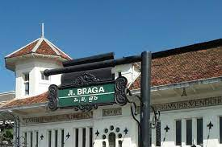

Braga
Di sisi kanan kiri Jalan Braga terdapat komplek toko yang memiliki arsitektur dan tata kota yang tetap mempertahankan ciri arsitektur kuno pada masa Hindia Belanda. Tata letak pertokoan tersebut mengikuti model yang ada di Eropa sesuai dengan perkembangan kota Bandung pada masa itu (1920-1940an) sebagai kota mode yang cukup termasyhur seperti halnya kota Paris pada saat itu. Di antara pertokoan
Lersebut yang masih mempertahankan ciri arsitektur lama adalah pertokoan Sarinah, Apotek Kimia Farma dan Gedung Merdeka (Gedung Asia Afrika yang dulunya adalah gedung Societeit Concordia). Model tata letak jalan dan gedung gedung pertokoan dan perkantoran yang berada di Jalan Braga juga terlihat pada model jalan-jalan lain di sekitar Jalan Braga seperti Jalan Suniaraja (dulu dikenal sebagai Jalan Parapatan Pompa) dan Jalan Pos Besar (Postweg)('sekarang Jalan Asia-Afrika') yang dibangun oleh Gubernur Jendral Herman Willem Daendels pada tahun 1811, di depan Gedung Merdeka.